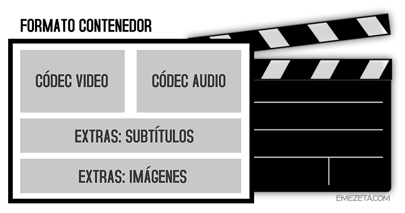

|
Formatos de video soportados en HTML
|
|
|
Antes de continuar con el modo avanzado de etiquetas de video, debemos conocer una serie de conceptos básicos y los diferentes formatos de video que existen actualmente. En primer lugar, debemos saber que un archivo de video tiene dos partes principales: el formato contenedor, que es el formato del video en sí, mientras que en su interior puede tener múltiples componentes codificados con diferentes codecs.
|
|

|
|
De hecho, un video básico suele tener, como mínimo, un componente de video y otro de audio, pero puede tener muchos más (subtítulos, imágenes, etc...). Estos detalles son muy importantes, ya que dependiendo del formato y/o codec de un video, puede que sea factible utilizarlo para web o no, así que hay que conocer un poco sobre estos conceptos.
|
|
El siguiente listado de formatos/codecs más conocidos y/o utilizados:
|
| Formato |
Codec utilizado |
Características |
¿Recomendado? |
| MP4 |
x264, DivX H264 |
Alta calidad. Codec x264 libre. |
Sí, buen soporte |
| WebM |
VP8, VP9 |
Alternativa libre a MP4 de Google. |
Sí ,soporte medio |
| Ogv |
Theora |
Alternativa libre a MP4. |
Sí , soporte medio |
| MKV |
Matroska |
Buena compresión. Potente. |
No, alto consumo CPU |
| AVI |
XviD, DivX 3/5 |
Menor compresión que MP4. |
No |
| HEVC |
x265, DivX HEVC |
Futura evolución de MP4. |
No, en desarrollo aún. |
|
|
Otros formatos como MOV, FLV, 3GP, MPG, RMVB o ASF (WMV) no se recomiendan para su utilización en web ya que son anticuados, propietarios o poco eficientes.
|
|
|
|
Regresar
|
|